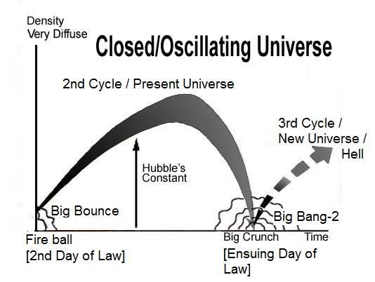

Think not that God does not heed the deeds of those who do wrong. He but gives them respite against a Day when the eyes will fixedly stare in horror, they running forward with necks outstretched, their heads uplifted, their gaze returning not towards them, and their hearts, a void! So, warn mankind of the Day when the Wrath will reach them. Then will the wrongdoers say: "Our Lord! Respite us for a short term; we will answer Your call and follow the apostles!" What! Were you not wont to swear aforetime that you should suffer no decline? And you dwelt in the dwellings of men who wronged their own souls; you were clearly shown how We dealt with them, and We put forth parables for you!" Mighty indeed were the plots which they made—but their plots were within the sight of God—even though they were such as to shake the hills! Never think that God would fail his apostles in His promise; for God is Exalted in power, the Lord of Retribution. One day the land will be changed to a different land, and so will be the Skies, and will be marshaled forth before Allah, the One, the Irresistible.
মনে করো না যে, যারা অন্যায় করে, ঈশ্বর তাদের আমলে মনোযোগ দেন না। কিন্তু তিনি তাদেরকে অবকাশ দেন সেই দিনের জন্য যেদিন চোখ স্থির হয়ে ভয়ে তাকিয়ে থাকবে, তারা ঘাড় প্রসারিত করে সামনের দিকে ছুটবে, মাথা উঁচু করে, তাদের দৃষ্টি তাদের দিকে ফিরে আসবে না এবং তাদের অন্তর শূন্য হয়ে যাবে। অতএব, মানুষকে সতর্ক কর সেই দিন সম্পর্কে যেদিন তাদের উপর গজব পৌঁছাবে। অতঃপর জালেমরা বলবেঃ হে আমাদের পালনকর্তা! আমাদেরকে অল্প সময়ের জন্য অবকাশ দিন, আমরা আপনার ডাকে সাড়া দেব এবং রসূলদের অনুসরণ করব। কি! আপনি কি আগে শপথ করতেন না যে আপনার কোন পতন হবে না? আর তুমি এমন লোকদের বাসস্থানে বাস করেছিলে যারা নিজেদের আত্মার প্রতি জুলুম করেছিল; আমরা তাদের সাথে কিভাবে আচরণ করেছি তা আপনাকে স্পষ্টভাবে দেখানো হয়েছে এবং আমরা আপনার জন্য দৃষ্টান্ত উপস্থাপন করেছি!" তারা যে চক্রান্ত করেছিল তা সত্যিই শক্তিশালী ছিল-কিন্তু তাদের ষড়যন্ত্র ঈশ্বরের দৃষ্টিতে ছিল-যদিও সেগুলি পাহাড়কে কাঁপানোর মতো ছিল! কখনও ভাববেন না যে ঈশ্বর তাঁর প্রেরিতদের প্রতিশ্রুতিতে ব্যর্থ হবেন; কারণ ঈশ্বর শক্তিতে মহিমান্বিত, এবং এক দিন দেশের প্রভু, এক দেশের জন্য আলাদাভাবে বদলাবেন। আকাশ, এবং আল্লাহর সামনে মার্শাল করা হবে, এক, অপ্রতিরোধ্য.
In the last paragraph of the above verses, the Arabic word 'tubaddalu' refers to a quantitative change of the land, not a qualitative change. Therefore, the Final Judgment will not be carried out on Earth but on a different land, under a different sky, as the verses state: "One day the land will be changed to a different land, and so will be the Skies..." The Hadith also indicate the same:
উপরের আয়াতগুলোর শেষ অনুচ্ছেদে আরবি শব্দ 'তুবদ্দালু' ভূমির পরিমাণগত পরিবর্তনকে বোঝায়, গুণগত পরিবর্তন নয়। অতএব, চূড়ান্ত বিচার পৃথিবীতে নয়, ভিন্ন ভূমিতে, ভিন্ন আকাশের নিচে, যেমন আয়াতে বলা হয়েছে: "একদিন ভূমি ভিন্ন ভূমিতে পরিবর্তিত হবে এবং আকাশও হবে..." হাদিসটিও একই ইঙ্গিত দেয়:
―The Land of Final Judgment will be a new land completely; the color of that land will be white like silver.‖ [Mashnad-e-Ahmed / Tafsir ibn Zarir]
- চূড়ান্ত বিচারের ভূমি সম্পূর্ণরূপে একটি নতুন ভূমি হবে; সেই জমির রং হবে রূপার মতো সাদা।
―On the Day of Final Judgment, mankind will be assembled on a land that is clear and white like bread‖ [Bukhari and Muslim] ―The Earth will be squeezed, and beside it, in another land, mankind will be assembled for the Judgment‖ [Tafsir-e-Mazhari]
শেষ বিচারের দিন মানবজাতিকে একত্রিত করা হবে এমন একটি জমিতে যা রুটির মতো পরিষ্কার এবং সাদা।
The following verses of the Quran inform how the Skies (Samawaat / this Universe) will change:
কুরআনের নিম্নোক্ত আয়াতগুলো জানায় কিভাবে আকাশ (সামাওয়াত/এই মহাবিশ্ব) পরিবর্তন হবে:
―When the stars will fall losing their luster.‖ [Al Quran 81: 2]
"যখন তারা তাদের দীপ্তি হারাবে।" [আল কুরআন 81: 2]
―By the sky that returns, and by the land that opens out.‖ [Al Quran 86: 11-12]
"আকাশের শপথ যা ফিরে আসে এবং উন্মুক্ত ভূমির।" [আল কুরআন 86: 11-12]
The stars will fall into the super-massive black holes of the galaxies when the universe as a whole will be contracting. Eventually, the universe will collapse into a Big Crunch. From the Big Crunch, the universe will revive (Big Bang-2). In its initial state, the reviving universe will take the form of a Heavy Mass (Thaqal). This Heavy Mass is the land opened out:
নক্ষত্রগুলি গ্যালাক্সির সুপার-ম্যাসিভ ব্ল্যাক হোলে পড়ে যাবে যখন সমগ্র মহাবিশ্ব সংকুচিত হবে। অবশেষে, মহাবিশ্ব একটি বিগ ক্রাঞ্চে ভেঙে পড়বে। বিগ ক্রাঞ্চ থেকে, মহাবিশ্ব পুনরুজ্জীবিত হবে (বিগ ব্যাং-২)। তার প্রাথমিক অবস্থায়, পুনরুজ্জীবিত মহাবিশ্ব একটি ভারী ভরের (থাকাল) রূপ নেবে। এই ভারী ভর হল খোলা জমি:
―By the sky and the construction of it; by the Land and its expanse‖ [Al Quran 91: 5-6]
-আকাশ ও তার নির্মাণের শপথ; ভূমি ও তার বিস্তৃতি দ্বারা” [আল কুরআন 91: 5-6]
The concept can be expressed with the Cyclic Model of the Universe, described as under. This concept can be explained using the Cyclic Model of the Universe, described as follows: The universe is currently expanding, but scientists predict that this expansion may eventually halt due to gravitational forces, leading to a contraction. In the end, all the matter in the universe will come together. Scientists refer to this extreme end of the contracting universe as the Big Crunch.
ধারণাটিকে মহাবিশ্বের চক্রীয় মডেল দিয়ে প্রকাশ করা যেতে পারে, যা নীচে বর্ণিত হয়েছে। এই ধারণাটিকে মহাবিশ্বের চক্রীয় মডেল ব্যবহার করে ব্যাখ্যা করা যেতে পারে, যা নিম্নরূপ বর্ণনা করা হয়েছে: মহাবিশ্ব বর্তমানে সম্প্রসারিত হচ্ছে, কিন্তু বিজ্ঞানীরা ভবিষ্যদ্বাণী করেছেন যে মহাকর্ষীয় শক্তির কারণে এই সম্প্রসারণ শেষ পর্যন্ত থেমে যেতে পারে, যা একটি সংকোচনের দিকে পরিচালিত করে। শেষ পর্যন্ত, মহাবিশ্বের সমস্ত বিষয় একত্রিত হবে। বিজ্ঞানীরা সংকুচিত মহাবিশ্বের এই চরম প্রান্তকে বিগ ক্রাঞ্চ বলে উল্লেখ করেছেন।
―On the day when We will roll up the Skies like the rolling up of the scroll for writings...‖ [Al Quran 21: 104]
"যেদিন আমরা আকাশকে এমনভাবে গুটিয়ে দেবো যেভাবে লেখার জন্য স্ক্রল গুটানো হয়..." [আল কুরআন 21:104]
FIGURE 14.1: Resurrection and the Third Cycle

চিত্র 14_1 / Figure 14_1
চিত্র 14.1: পুনরুত্থান এবং তৃতীয় চক্র
চিত্র 14_1 / Figure 14_1
The universe (Big Crunch) will be resurrected through another Big Bang (Big Bang-2). Everything will be revived to set out for the next cycle (3rd Cycle).
মহাবিশ্ব (বিগ ক্রাঞ্চ) আরেকটি বিগ ব্যাং (বিগ ব্যাং-2) এর মাধ্যমে পুনরুত্থিত হবে। পরবর্তী চক্রের (৩য় চক্র) জন্য সবকিছু পুনরুজ্জীবিত করা হবে।
―...as We originated the first creation We shall reproduce it—a promise on Us, surely We will bring it about.‖ [Al Quran 21: 104] Resurrection of the Living Creatures
"...যেহেতু আমরা প্রথম সৃষ্টির উদ্ভব করেছি, আমরা এটিকে পুনরুত্পাদন করব-আমাদের প্রতি একটি প্রতিশ্রুতি, অবশ্যই আমরা এটি তৈরি করব।" [আল কুরআন 21: 104] জীবন্ত প্রাণীদের পুনরুত্থান
When the collapsing universe squeezes into a super-dense singularity (Big Crunch), the hands of His soul (nafs), which sustains and evolves the universes, will be absorbed into His body in form (as explained in Chapter 1). The Big Crunch will then be held within the force fields emanating from His face, as the following verse states:
যখন ধ্বসে যাওয়া মহাবিশ্ব একটি অতি-ঘন এককত্বে (বিগ ক্রাঞ্চ) চেপে যায়, তখন তাঁর আত্মার হাত (নফস), যা মহাবিশ্বকে টিকিয়ে রাখে এবং বিকশিত করে, আকারে তাঁর দেহে শোষিত হবে (যেমন অধ্যায় 1 এ ব্যাখ্যা করা হয়েছে)। বিগ ক্রাঞ্চ তখন তার মুখ থেকে নির্গত শক্তি ক্ষেত্রগুলির মধ্যে অনুষ্ঠিত হবে, যেমন নিম্নলিখিত আয়াতটি বলে:
―And call not, besides God on another god. There is no god but He. Everything will perish except His own Face. To Him belongs the command, and to Him will ye be brought back‖ [Al Quran 28:88]
-আর আল্লাহ ব্যতীত অন্য উপাস্যকে ডাকো না। তিনি ছাড়া কোন উপাস্য নেই। তাঁর নিজের চেহারা ছাড়া সবকিছুই ধ্বংস হয়ে যাবে। আদেশ তাঁরই এবং তাঁর কাছেই তোমাদের ফিরিয়ে আনা হবে” [আল কুরআন ২৮:৮৮]
Everything, from the beginning to the end, will survive within the Big Crunch as information (commands). Allah will reprogram the collapsed universe (Big Crunch) to reinitiate it. Subsequently, He will launch the creation. Soon, the reviving universe will gain mass and take the form of Thaqal (Heavy Mass). The Thaqal will once again move into the right hand of His nafs extended when the resurrection of the dead occurs. Thus, mankind will be resurrected within a kind of Fireball (Thaqal) following the Big Crunch. In cosmology, the Fireball is defined as a state of the universe that occurs less than a million years before or after the singularity (Big Crunch/Big Bang). The Fireball represents a violent state of the universe; however, the Quran indicates that it will provide the scope for Resurrection. ―…They ask, ―When will be the Day of Judgment and Justice? A Day when they will be tried over the fire‖ [Al Quran 51: 12–13]
শুরু থেকে শেষ পর্যন্ত সবকিছুই তথ্য (কমান্ড) হিসেবে বিগ ক্রাঞ্চের মধ্যে টিকে থাকবে। আল্লাহ ধ্বংস হয়ে যাওয়া মহাবিশ্বকে (বিগ ক্রাঞ্চ) পুনঃপ্রবর্তন করার জন্য পুনরায় প্রোগ্রাম করবেন। পরবর্তীকালে, তিনি সৃষ্টির সূচনা করবেন। শীঘ্রই, পুনরুজ্জীবিত মহাবিশ্ব ভর লাভ করবে এবং থাকাল (ভারী ভর) আকার ধারণ করবে। মৃতদের পুনরুত্থান ঘটলে তাকাল আবার তার প্রসারিত নফসের ডান হাতে চলে যাবে। এইভাবে, মানবজাতি বিগ ক্রাঞ্চ অনুসরণ করে এক ধরণের ফায়ারবলের (থাকাল) মধ্যে পুনরুত্থিত হবে। কসমোলজিতে, ফায়ারবলকে মহাবিশ্বের এমন একটি অবস্থা হিসাবে সংজ্ঞায়িত করা হয় যা এক লক্ষ বছরের আগে বা পরে ঘটে (বিগ ক্রাঞ্চ/বিগ ব্যাং)। ফায়ারবল মহাবিশ্বের একটি হিংস্র অবস্থার প্রতিনিধিত্ব করে; তবে, কুরআন ইঙ্গিত করে যে এটি পুনরুত্থানের সুযোগ প্রদান করবে। তারা জিজ্ঞেস করে, কবে হবে বিচার ও বিচারের দিন? যেদিন তারা আগুনের উপর পরীক্ষা করা হবে” [আল কুরআন 51: 12-13]
The Land of Judgment
বিচারের দেশ
The Resurrection will occur within the Thaqal, but the Judgment will not take place there. For the Judgment, mankind will be transferred to a temporary land, created in the Super Space using the matter of the Solar System extracted from the Thaqal.
থাকালের মধ্যে কিয়ামত ঘটবে, কিন্তু বিচার সেখানে সংঘটিত হবে না। বিচারের জন্য, মানবজাতিকে একটি অস্থায়ী ভূমিতে স্থানান্তরিত করা হবে, যা থাকাল থেকে প্রাপ্ত সৌরজগতের বিষয়টি ব্যবহার করে সুপার স্পেসে তৈরি করা হয়েছে।
―And not they honored Allah—true honor—while the Land (Land of Judgment) is assembling in His hand on the Day of Resurrection, and the Skies rolled-up (Thaqal) in His right hand. Glory be to Him! And high is He above what they associate.‖ [Al Quran 39: 67]
- এবং তারা আল্লাহকে সম্মান করেনি - সত্যিকারের সম্মান - যখন কিয়ামতের দিন জমি (বিচারের দেশ) তাঁর হাতে সমবেত হবে এবং আকাশ তাঁর ডান হাতে (থাকাল) গড়িয়ে পড়বে। তিনি পবিত্র! এবং তারা যাকে শরীক করে তিনি তার উর্ধ্বে।” [আল কুরআন 39:67]
Thus, mankind will be transferred to a specially created land for the Judgment.
এইভাবে, মানবজাতি বিচারের জন্য একটি বিশেষভাবে সৃষ্ট ভূমিতে স্থানান্তরিত হবে।
―The day when they will hear a blast, in truth, that will be the day of coming forth. Verily, it is We Who give life and death, and to Us is the final goal. On the day, the Land (Fireball / Thaqal) breaks away from them, quickly; that will be a gathering together, quite easy for Us.‖ [Al Quran 50: 42-44] The Thaqal will move apart, leaving behind the resurrected creatures and the matter to form the Land of Judgment. Thus, the verse under discussion states: ―One day the land will be changed to a different land, and so will be the Skies, and will be marshaled forth before Allah, the One, the Irresistible.‖ [The Day of Judgment is deliberately discussed in Section-6 of Chapter-39.] From the Land of Judgment, many humans will be salvaged to another universe called Jannaat. The rest will be cast back into the reviving universe (Samawaat/this universe), which will be known as hell, with galaxies as the objects of hell.
- যেদিন তারা একটি বিস্ফোরণ শুনতে পাবে, সত্যিকার অর্থে, সেই দিনটি হবে আবির্ভাবের দিন। নিঃসন্দেহে আমরাই জীবন ও মৃত্যু দান করি এবং আমাদেরই শেষ লক্ষ্য। যেদিন, ভূমি (আগুনের গোলা/থাকাল) তাদের কাছ থেকে দ্রুত ভেঙ্গে যায়; এটা হবে একত্রিত হওয়া, আমাদের জন্য খুবই সহজ।'' [আল কুরআন ৫০:৪২-৪৪] পুনরুত্থিত প্রাণী এবং বিচারের ভূমি গঠনের বিষয়টিকে পেছনে ফেলে থাকাল আলাদা হয়ে যাবে। সুতরাং, আলোচ্য আয়াতে বলা হয়েছে: "একদিন ভূমি একটি ভিন্ন ভূমিতে পরিবর্তিত হবে, এবং একইভাবে আকাশ হবে, এবং একক, অপ্রতিরোধ্য আল্লাহর সামনে মার্শাল করা হবে।" [বিচারের দিনটি ইচ্ছাকৃতভাবে অধ্যায়-39-এর ধারা-6-এ আলোচনা করা হয়েছে।] আয়াত থেকে অনেককে মানুষ বলা হবে। জান্নাত। বাকিদের পুনরুজ্জীবিত মহাবিশ্বে (সামাওয়াত/এই মহাবিশ্ব) ফিরিয়ে দেওয়া হবে, যা নরক নামে পরিচিত হবে, গ্যালাক্সিগুলি নরকের বস্তু হিসাবে।
And you will see the sinners that day bound together in fetters, their garments of liquid pitch, and their faces covered with Fire that God may requite each soul according to its deserts; and verily God is swift in calling to account. Here is a Message for mankind—let them take warning therefrom, and let them know that He is One God; let men of understanding take heed.
আর তুমি সেদিন দেখবে পাপীদেরকে বেঁধে বেঁধে রাখা হবে, তাদের তরল পোষাক, এবং তাদের মুখমন্ডল আগুনে ঢেকে রাখা হবে যাতে আল্লাহ প্রত্যেককে তার মরুভূমি অনুসারে প্রতিফল দেন। আর নিঃসন্দেহে ঈশ্বর দ্রুত হিসাব গ্রহণকারী। এখানে মানবজাতির জন্য একটি বার্তা রয়েছে- তারা সেখান থেকে সতর্কতা গ্রহণ করুক এবং তারা জানুক যে তিনি এক ঈশ্বর; বুদ্ধিমান লোকেরা সাবধানে থাকুক।